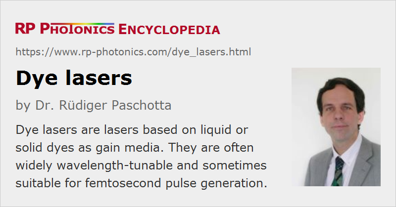

Dye Lasers
Definition: lasers based on liquid or solid dyes as gain media
More general terms: lasers
German: Farbstofflaser
How to cite the article; suggest additional literature
Author: Dr. Rüdiger Paschotta
A dye laser is a laser based on a dye (typically in a liquid solution) as the gain medium [1, 2]. Most laser dyes are based on organic molecules used in liquid form as solutions, although solid laser dyes and vapor dyes exist. A wide range of emission wavelengths from the ultraviolet to the near-infrared region can be addressed with different laser dyes. Typical characteristics of laser dyes as gain media are:
- They exhibit a broad gain bandwidth, which allows for broad wavelength tunability and also ultrashort pulse generation with passive mode locking.
- Upper-state lifetimes are typically a couple of nanoseconds, i.e., similar to those of semiconductor lasers, but orders of magnitude shorter than those of doped-insulator lasers. This means that dyes are not suitable for Q switching with continuous or long-pulse pumping. However, intense dye laser pulses can be obtained with pulsed pumping, using a Q-switched pump laser or a flash lamp.
- The gain per unit length can be fairly high (order of 103 cm−1), particularly for pulsed pumping.
- The power conversion efficiency is typically between 10% and 30% for laser pumping, and possibly lower for flash lamp pumping.
Many different dyes are nowadays available, and in total they can cover huge wavelength regions. One name like exalite, coumarin, rhodamine, pyrromethene, pyridine, fluorescein, pyridine or styryl can characterize a whole family of dyes with slightly different chemical structures, having somewhat different ranges of emission wavelengths and being distinguished with additional numbers. For example, one may use coumarin 2, 47, 102 or 153 for lasers in the blue to green spectral region.
Typical solvents for laser dyes are ethanol, p-dioxane and dimethylsulfoxide (DMSO). The used dye concentrations depend on the used pumping geometry and pump power; they are normally well below a gram per liter. The dyes can be purchased in powder form, such that the user can make the dye solution with any desired concentration.
Note that many laser dyes and some of the used solvents are poisonous and partly also carcinogenic. One should therefore carefully avoid to expose the skin to such a dye solution, or even to spill the dye by operating a not properly assembled dye circulating system. A particularly hazardous solvent, sometimes used for cyanide dyes, is dimethylsulfoxide (DMSO), which greatly accelerates the transport of dyes into the skin. (See also the article on laser safety.)
Pumping Options for Dye Lasers
Dye lasers are normally pumped at relatively short wavelengths. Some typical options are:
- Many dyes can be pumped with a green laser such as an argon ion laser or a frequency-doubled solid-state laser. For 532-nm pumping, for example, laser emission may then be in the green, yellow, orange, red or near infrared spectral region.
- Laser dyes for shorter emission wavelengths (for example, exalite, stilbene and coumarin) have to be pumped at shorter wavelengths – typically, with ultraviolet light. For example one may use a Q-switched and frequency-tripled Nd:YAG laser at 355 nm, or a frequency-quadrupled Nd:YAG laser at 266 nm.
- Other possibilities are to use an excimer laser, a nitrogen laser, or a copper vapor laser.
- Some dye lasers can be pumped with flash lamps. This leads to longer pulses and a lower power conversion efficiency, but possibly very high pulse energies.
Pulsed pumping allows the excitation of large volumes and thus the generation of pulses with high energies (sometimes of the order of 1 J).
Even for continuous pumping, the applied pump intensity is fairly high; for example, a few watts of pump power are focused to a beam waist with a radius of the order of 20 μm.
Dye Laser Resonators
The laser resonator of a dye laser typically contains a dye jet or a dye cuvette (see below) as the laser gain medium. In addition, there are usually one or several frequency-selective elements, for example a birefringent tuner or a diffraction grating in Littrow configuration, which permits wavelength tuning in a range of tens of nanometers. Narrow-linewidth lasers contain additional frequency filtering components such as etalons, and often sophisticated computer-controlled tuning mechanics for precisely setting the wanted emission wavelengths. On the other hand, mode-locked lasers use only course wavelength control, as their emission bandwidth must be large. A stable linear polarization of the output is usually obtained as a side effect of the used tuning elements.
Dye Jets and Dye Cuvettes; Recovery from Triplet States
A frequently used kind of dye laser uses a thin dye jet [5] as the gain medium, so that the dye molecules are used only for a short time within the pump and laser beam and have a long time to recover before they are used again.
Alternatively, the dye can be pumped through a thin cuvette. Here, the dye is enclosed in some transparent material, and it is easier to obtain a steady flow. Obviously, the cuvette material (for example, quartz) must be resistant to the laser light and the pump light, and the cuvette surfaces must have a high optical quality.
Some time for recovery is often required due to the tendency of organic dye molecules to become trapped in triplet states, in which they cannot participate in the lasing process. An alternative way to lower the triplet concentration is to add a triplet quenching agent to the dye solution.
Degradation; Exchanging Dyes
During operation, laser dyes tend to be chemically degraded. Therefore, the dye solution usually has to be exchanged after an operation time of 100 hours, for example. That lifetime depends on the dye used, on the pumping conditions, the volume of dye solution, etc.
One also sometimes has to exchange the dye in order to access a different wavelength region. There are systems where different dye cells (cuvettes) can be used for different dyes, and switching between different dye cells is relatively easy, requiring little or no realignment of the laser resonator.
Ultrashort Pulse Generation
Much of the original work on ultrashort pulse generation was done with dye lasers [6, 8, 9]. However, dye lasers suffer from significant disadvantages such as rapid degradation during operation, limited output power, and the need for pumping e.g. with green or blue light, making their pump sources expensive. Furthermore, dye lasers require the awkward handling of poisonous, often even carcinogenic materials.
For such reasons, solid-state lasers, in particular Ti:sapphire lasers and later on also fiber lasers, took most of the business from dye lasers (at least in the domain of ultrashort pulse generation) as soon as they were sufficiently developed. Dye lasers are still used in some areas, e.g. laser spectroscopy with wavelengths which are otherwise hard to generate. They are also particularly suitable for intracavity laser absorption spectroscopy.
Solid Laser Dyes
There is some work on dye lasers based on solid media, e.g. with the dye in a polymer matrix. Obviously, the solid-state form has many advantages, particularly concerning handling. A problem, however, is the rapid degradation, either for a limited time by triplet excitation, or permanently by destruction of dye molecules. Some success has recently been achieved with rotating dye disk lasers [10].
Suppliers
The RP Photonics Buyer's Guide contains 18 suppliers for dye lasers. Among them:
Questions and Comments from Users
Here you can submit questions and comments. As far as they get accepted by the author, they will appear above this paragraph together with the author’s answer. The author will decide on acceptance based on certain criteria. Essentially, the issue must be of sufficiently broad interest.
Please do not enter personal data here; we would otherwise delete it soon. (See also our privacy declaration.) If you wish to receive personal feedback or consultancy from the author, please contact him e.g. via e-mail.
By submitting the information, you give your consent to the potential publication of your inputs on our website according to our rules. (If you later retract your consent, we will delete those inputs.) As your inputs are first reviewed by the author, they may be published with some delay.
Bibliography
| [1] | P. P. Sorokin and J. R. Lankard, “Stimulated emission observed from an organic dye, chloro-aluminum phtalocyanine”, IBM J. Res. Dev. 10, 162 (1966), doi:10.1147/rd.102.0162 |
| [2] | F. P. Schäfer et al., “Organic dye solution laser”, Appl. Phys. Lett. 9 (8), 306 (1966), doi:10.1063/1.1754762 |
| [3] | B. H. Soffer and B. B. McFarland, “Continuously tunable, narrow-band organic dye lasers”, Appl. Phys. Lett. 10 (10), 266 (1967), doi:10.1063/1.1754804 |
| [4] | O. G. Peterson et al., “Cw operation of an organic dye solution laser” (first continuous-wave operation of a dye laser), Appl. Phys. Lett. 17 (6), 245 (1970), doi:10.1063/1.1653384 |
| [5] | P. K. Runge and R. Rosenberg, “Unconfined flowing-dye films for cw dye lasers”, IEEE J. Quantum Electron. 8 (12), 910 (1972), doi:10.1109/JQE.1972.1076895 |
| [6] | C. V. Shank and E. P. Ippen, “Subpicosecond kilowatt pulses from a mode-locked cw dye laser”, Appl. Phys. Lett. 24, 373 (1974), doi:10.1063/1.1655222 |
| [7] | C. V. Shank, “Physics of dye lasers”, Rev. Mod. Phys. 47, 649 (1975), doi:10.1103/RevModPhys.47.649 |
| [8] | R. L Fork, B. I. Greene and C. V Shank, “Generation of optical pulses shorter than 0.1 ps by colliding pulse modelocking”, Appl. Phys. Lett. 38, 671 (1981), doi:10.1063/1.92500 |
| [9] | J. A. Valdmanis et al., “Generation of optical pulses as short as 27 femtoseconds directly from a laser balancing self-phase modulation, group-velocity dispersion, saturable absorption, and saturable gain”, Opt. Lett. 10 (3), 131 (1985), doi:10.1364/OL.10.000131 |
| [10] | R. Bornemann et al., “Continuous-wave solid-state dye laser”, Opt. Lett. 31 (11), 1669 (2006) doi:10.1364/OL.31.001669 (first continuous-wave operation of a solid-state dye laser) |
| [11] | S. Klinkhammer et al., “A continuously tunable low-threshold organic semiconductor distributed feedback laser fabricated by rotating shadow mask evaporation”, Appl. Phys. B 97, 787 (2009), doi:10.1007/s00340-009-3789-0 |
See also: gain media, tunable lasers, titanium–sapphire lasers, ultrafast lasers, mode-locked lasers, spectroscopy, intracavity laser absorption spectroscopy, laser safety
and other articles in the category lasers
|  |
If you like this page, please share the link with your friends and colleagues, e.g. via social media:
These sharing buttons are implemented in a privacy-friendly way!